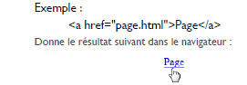
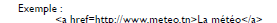
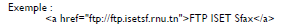
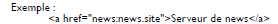
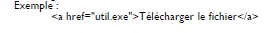
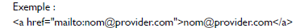
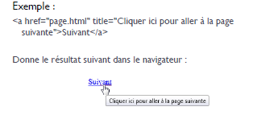

- Structure de base d'une page HTML5
- L'en-tête head et le corps body
- L'encodage (charset)
- Le titre principal de la page
- Les paragraphes
- La mise en forme du texte
- Les titres
- Les listes
- Les liens
- Insertion d'une image
- Les balises structurantes de HTML5
- Les balises de type block et inline
- Les balises universelles
- Les tableaux *Diviser un tableau *Fusionner un tableau
- Les objets de formulaire
- Les formats audio
- Les formats vidéo
Pour faire un lien, la balise que nous allons utiliser est très simple à retenir :a.Il faut lui ajouter un attribut, href, pour indiquer vers quelle page le lien doit conduire.
Une ancre est une sorte de point de repère que vous pouvez mettre dans vos pages HTML lorsqu'elles sont très longues.Il s’agit d’un lien interne.
Les liens internes permettent de se déplacer à l'intérieur d'un fichier HTML, sans que le visiteur soit obligé de faire "scroller" la fenêtre.
Le visiteur va donc cliquer sur un lien et il sera amené vers l'ancre.
Pour cela deux étapes sont nécessaires :
* Définir la cible d'un lien (l'ancre) * associer ce même lien à cette ancre.
Pour créer une ancre :
Il suffit de rajouter l'attribut id à une balise qui va alors servir de repère. On peut utiliser l'attribut id pour donner un nom à l'ancre.
Cela nous servira ensuite pour faire un lien vers cette ancre.
Ensuite, il suffit de créer un lien comme d'habitude, mais
cette fois l'attribut href contiendra un dièse (#) suivi du
nom de l'ancre. Exemple :

- Liens externes :
Les liens externes commencent comme les autres liens, c'est à dire avec la balise a href="...." et le reste de la syntaxe varie.
*Lien externe vers un site http
*Lien externe vers un serveur FTP

*Lien externe vers un serveur de news (mais pour que ce lien soit valide il faut que le visiteur soit abonné à ce serveur de news)

*un lien externe on peut proposer un fichier (.exe ou .zip) en téléchargement

On peut créer un lien e-mail pour que la messagerie paramétrée par défaut du visiteur se lance automatiquement.Pour cela on utilise des liens de type mailto.
Si on clique sur le lien, un nouveau message vide s'ouvre, prêt à être envoyé à l’adresse e-mail indiquée.

On peut utiliser l'attribut title qui affiche une bulle d'aide lorsqu'on pointe sur le lien.Cet attribut est facultatif.
